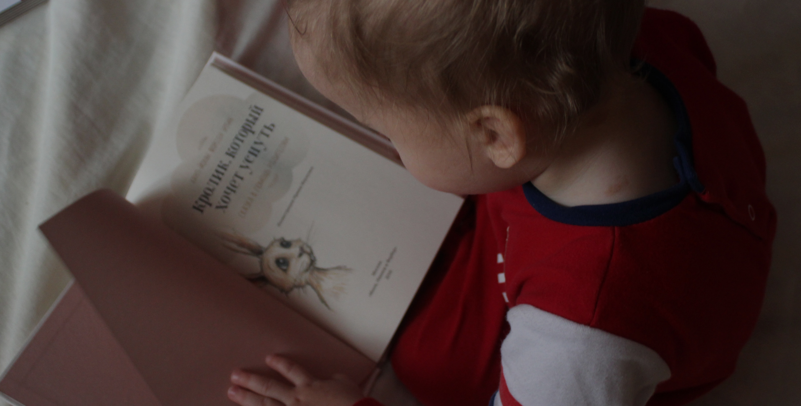

법률사무소 그날은 체계적인 운영체계로 사건을 진행합니다
01
대응 전략부터 후속 조치까지
One-Stop컨설팅 제공

02
단순한 법률 상담 ? NO!
평생지기 같은 심리상담 YES!
심리상담사를 통한 의뢰인 및 주변가족들의
아픔까지 케어하는 상담서비스 제공합니다.
03
모든 변론, 조정 등
재판 기일을 의뢰인께 보고
의뢰인 불참시 변론,조정,
결과보고 서비스를 제공합니다
04
소송 진행중 유선, 카톡,
문자등 무제한 상담 제공
수임 후 일어나는 상황들에 대한
무제한 상담서비스 제공
05
재판기간, 횟수
무관 정액 서비스
가사사건이 장기간 길어질 때
끝가지 책임지는 무관 정액서비스 제공
06
재판 외 합의 소통 대행
의뢰인의 상대방에 연락을 취해야 할 경우
법률사무소 측에서 연락 대행서비스제공
07
상담 실장, 사무장 상담? NO!
대표변호사 직접 상담 YES!
사무장이나 상담실장이 아닌
대표 변호사가 직접 상담/관리해주는 서비스 제공
08
소송제기만을 위한 상담? NO! 상담을 통한 해결 YES!
가사 사건의 경우 장기간으로 길어지는 경우가 많고,
소송제기 전까지의 상황에 대한 증거가 확보되지 않는 경우가 많아
소송제기 여부와 관계 없이 전문가와 미리 상담할 수 있는 서비스 제공